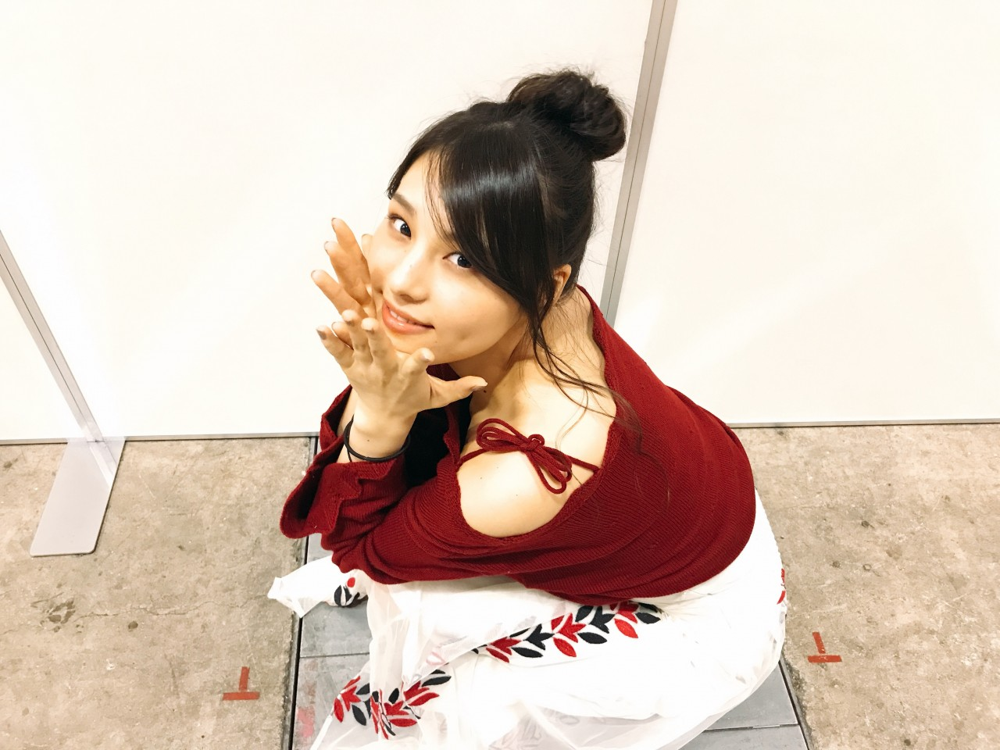
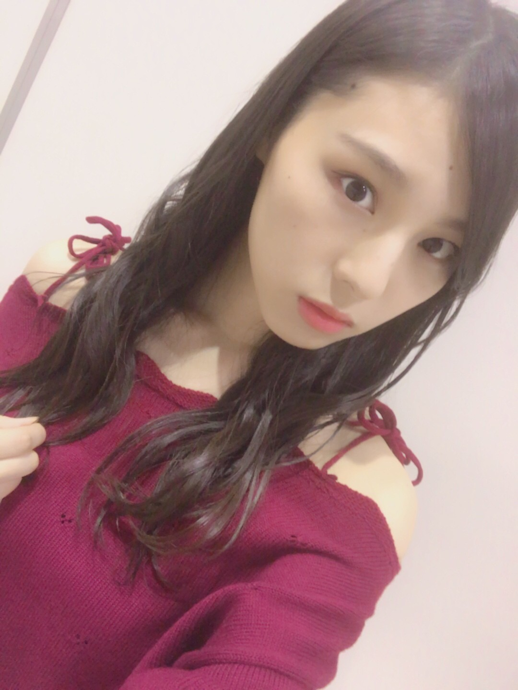
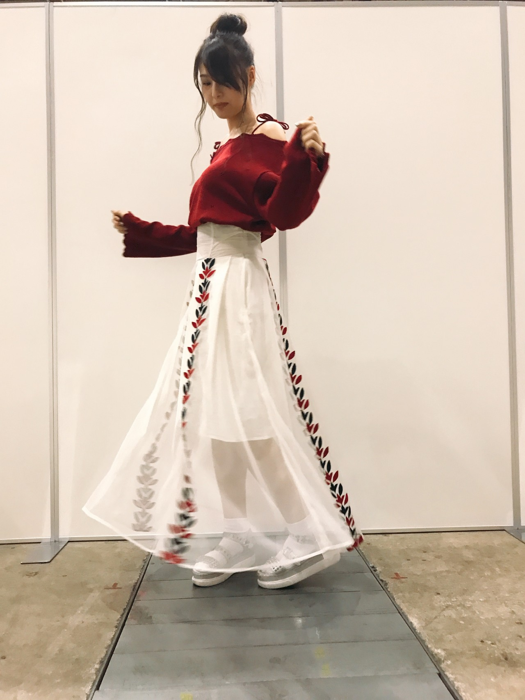
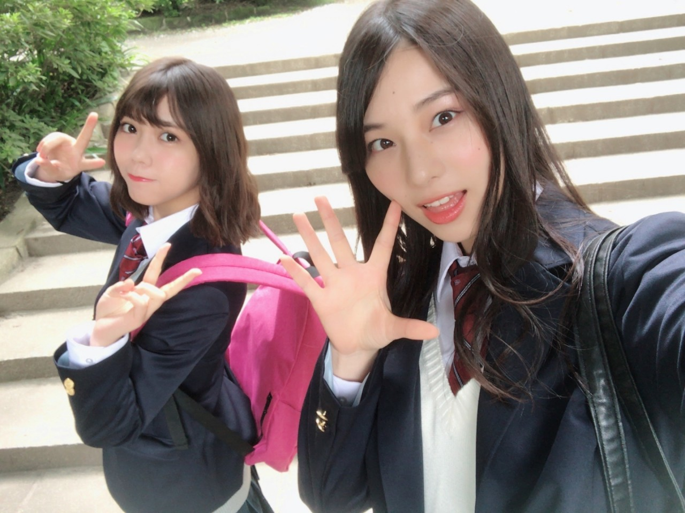

| 2017/09 21 Thu | #安室ちゃんありがとう _(．．*)vol.205 |
みなさんこんばんは
相楽伊織です

この前の個握のお洋服
ニット:Supreme.La.La.
スカート:FURFUR
ニットは肩紐を結んで自分で好きなように
長さとかリボンを調節できるの♪
可愛くてお気に入り(^^)

4部は巻き下ろし
5部はお団子にしたよ～

靴もFURFURだよー
メンバーの何人かとお揃いだった笑
昨日発表された
安室奈美恵さんの引退。
昨日ニュース見ても全然現実感無かったけど
今日の朝どのニュース番組でも
引退のニュースをやってて
あー、そっか
本当に引退なんだなぁって感じて涙がでました
中学生の時に
アルバム｢Past<Future｣を聴いてから
安室ちゃんにハマって
昔の曲も聴き漁って
ライブにも行って、ファンクラブにも入って
シングルも全部買って
本当に大好きな人なんです
ライブのリハで
気持ちをあげたい時には
安室ちゃんのライブT着て頑張ってるの！
初めて行ったアーティストのライブは
安室ちゃんの五大ドームツアーの東京ドーム公演
すっごく楽しくて
いまでも思い出せるくらい
鮮明に覚えてる
でも次は自分がその舞台に立てるって
すごい夢のある話だよね、
当たるスポットライトは違うけど。
それから毎年ライブを観に行って
年に2回行った年もあって
本当に本当に大好きで、、
20代の安室ちゃんを知らないけど
今も色褪せない輝きとか
安室ちゃんを普段聞かない人でも
知ってる曲はいっぱいあるし
本当に偉大なアーティストだなと改めて思います
歌もダンスもライブで楽しそうな安室ちゃんも
ファッション誌に載ってる安室ちゃんも
全部全部好き。
25年間お疲れ様でした！
あと1年沢山思い出つくります
最後の最後まで応援しています
ずっと憧れ
 乃木坂46の｢の｣ 今週日曜日
乃木坂46の｢の｣ 今週日曜日
みり愛と未央奈と！
きいてね！

i o r i .

コメント(418)
2017/09/21 14:30